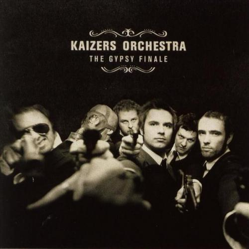
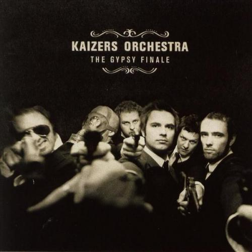

The Gypsy Finale
|  |
|
The Gypsy Finale ble utgitt i 2004 og ble spilt inn på Rockefeller i Oslo den 27. februar under Kaizers konsert der. Sporene er konsertopptak.
|  |
|
The Gypsy Finale ble utgitt i 2004 og ble spilt inn på Rockefeller i Oslo den 27. februar under Kaizers konsert der. Sporene er konsertopptak.